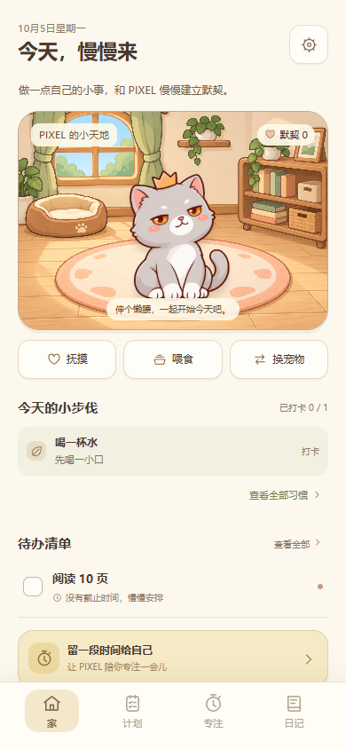
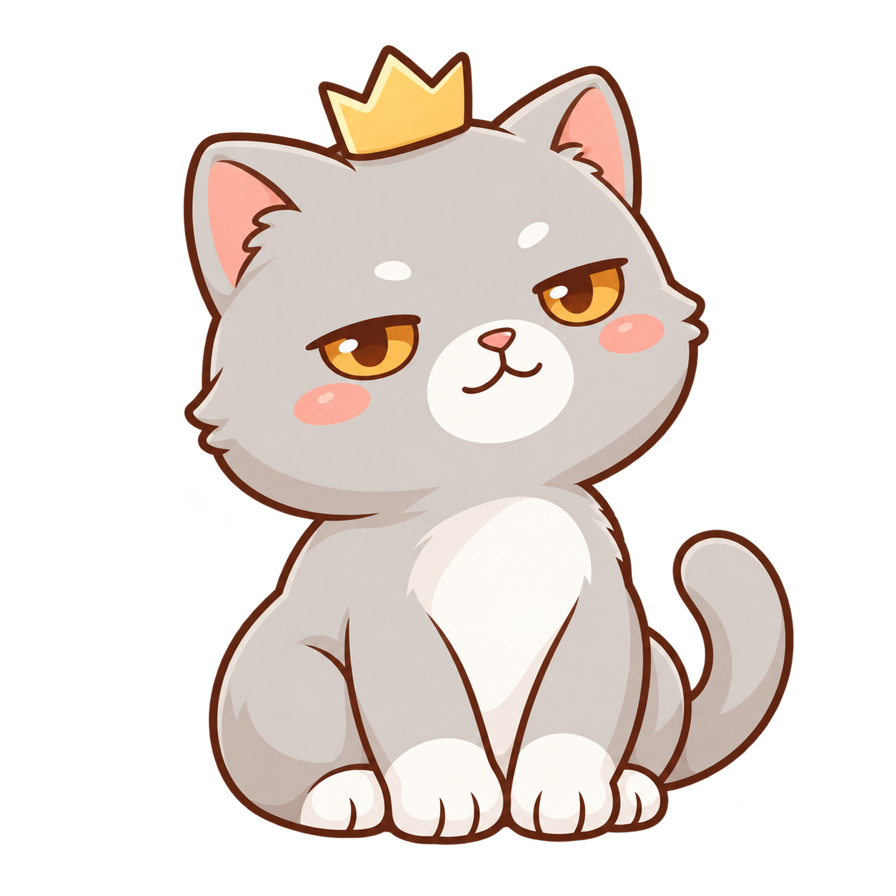

PIXEL · Android 本地测试版PIXEL · Local Android test build
把小习惯，
养成好日常。Small habits.
A little company.
计划今天的小事，留一点时间给自己。
还有猫咪 PIXEL，陪你慢慢来。A place for your daily plans, a little focus and how you feel. With PIXEL the cat beside you.
APK · 直接安装或覆盖升级
0.3.1 · Android 8 及以上 · 当前界面为中文APK · Install directly or update in place
0.3.1 · Android 8+ · Chinese app interface

一点小进步，
也值得被看见。Small steps
count, too.
01 / 日常，有个地方安放A home for your day
四个入口，
照顾自己的节奏。Your day,
at your pace.
A little plan. A familiar face.
See today's habits and tasks beside PIXEL's room. Pet the cat, share a snack or start a focus session.
当前测试版的真实中文界面 · 示例记录Actual Chinese test-build screens · Example entries

02 / 小行动，小心意Small actions, little kindnesses
做一点自己的事，
也照顾一下猫咪。Do a little for you.
Share a little with PIXEL.
完成今天的小行动Finish a small action
习惯、待办、正式专注或今日的日记。A habit, a to-do, a full focus session or today's journal.
收到一份食物奖励Receive a food reward
直接获得食物，不用换算积分。每日奖励有上限。Food goes straight to your inventory. Daily reward limits apply.
递给 PIXEL，慢慢熟悉Feed PIXEL, grow familiar
手持食物递给它，看到开心爱心；“默契”记录每次喂食，不用花掉。Hand over a snack and see happy hearts. Your bond records each feeding; it isn't a currency.
漏一天也不用补欠账。抚摸一下，下一步可以很小。Miss a day? There is no catch-up debt. Say hello, and make the next step small.
03 / 自己的记录，自己的空间Your notes, your own space
留在本机，
安心慢慢写。Keep it local.
Make it yours.
不用注册账号。习惯、待办和日记保存在当前手机 App 本机；写到一半的日记也会保留草稿。No account needed. Habits, tasks and journals stay in this app on your device, including unfinished journal drafts.
可导出 JSON 备份，也可预览并合并恢复。换设备前，请先备份。Export a JSON backup, then preview and merge a restore. Back up before changing devices.
关于保存与迁移About saving & moving your data未来收费方向Future pricing direction
规划中Planned- 基础免费Free basics
- 基础功能，本机保存。Core features, stored locally.
- 本地买断One-time local purchase
- 完整本地功能，包含后续功能更新；不包含云端。Full local features and future feature updates. Cloud is excluded.
- 云端订阅Separate cloud subscription
- 同步与备份另外收费，尚未接入。Sync and cloud backup paid separately; not connected yet.
当前测试版的基础功能可完整试用，无付款入口。价格与免费额度待定。The current test build lets you try the core features. No payments are enabled. Pricing and free-tier limits are still to be decided.
04 / 开始之前Before you begin
几个实用的小提醒。A few useful things to know.
现在是本地测试版，可以先从一件小事开始。This is a local test build. Start with one small thing.
怎样安装？支持哪些设备？How do I install it? Which devices are supported?
在 Android 8 或以上的手机下载 APK，打开即可安装，无需解压。已有 PIXEL？先在 App 设置导出 JSON 备份，再覆盖安装 0.3.1，不要先卸载或清除资料。如果系统提示，允许正在使用的浏览器或文件管理器“安装未知应用”。这是直接下载的测试版，目前不在 Google Play，也没有 iOS 版本；App 界面暂为中文。Download the APK on a phone running Android 8 or later and open it to install. No extraction is needed. Already using PIXEL? Export a JSON backup in app settings, then install 0.3.1 over the existing app without uninstalling or clearing data. If asked, allow your browser or file manager to install unknown apps. This is a directly distributed test build, not a Google Play release. There is no iOS version; the app interface is currently Chinese.
浏览器无法直接下载 APK？Browser unable to download the APK directly?
可改下载 ZIP 测试包，解压后打开里面的同一份 0.3.1 APK 安装。升级前先备份，不要卸载旧版。Download the ZIP test build instead, extract it, then install the same 0.3.1 APK inside. Back up first and keep the existing app installed.
资料保存在哪里？浏览器记录能迁移吗？Where is my data? Can I move browser records?
Android App 和浏览器 Demo 的资料各自保存在本机，不会自动同步。你可以在原浏览器设置中导出 JSON，再在手机 App 中选择该文件、查看预览，最后点“确认合并恢复”。当前记录保留，冲突资料会另存副本。The Android app and browser demo store their own local data; they do not sync automatically. Export JSON from the original browser's settings, choose it in the phone app, review the preview and confirm the merge. Current records are kept, with conflicting data retained separately.
手机遗失、卸载或清除 App 资料可能令本机记录无法取回。请定期导出备份到你自己保管的位置。Losing a device, uninstalling the app or clearing its data can make local records unrecoverable. Export backups regularly to a place you control.
以后更新，会影响已经保存的记录吗？What should I do before updating?
先导出 JSON 备份，再安装后续同一 App、同签名的更新包，覆盖现有版本。不要先卸载，也不要清除资料。当前版本已做模拟器覆盖升级与资料保留检查；真实手机与长期使用仍需持续验证。Export a JSON backup first, then install a later update for the same app with the same signing identity over the existing version. Do not uninstall or clear data first. Update and data-retention checks have been done on an emulator; real phones and longer use still need continued testing.
提醒和专注计时，在后台也能用吗？How do reminders and focus work in the background?
待办和习惯可用 Android 后台近似提醒，需要通知权限。系统节电、勿扰或强制停止 App 可能让提醒延后或不响，不是精确系统闹钟。0.3.1 专注期间离开 App 会暂停计时；工作需要可暂时离开，回来继续同一轮。可选“固定屏幕”限制切换应用，需要 Android 系统确认，仍可按系统方式解除；普通模式不能强制阻止 Home 或切换应用。放弃本轮需要再次确认。目前没有后台专注结束通知。Tasks and habits use approximate Android reminders after notification permission. Battery restrictions, Do Not Disturb or force-stopping can delay or silence them; these are not exact alarms. In 0.3.1, leaving the app pauses focus. The work exception lets you leave and continue the same session on return. Optional screen pinning restricts app switching after Android confirmation, but system unpin remains available. Normal mode cannot block Home or app switching. Abandoning a session needs confirmation. There is no background focus-completion notification.
有哪些宠物？10 秒体验也会送食物吗？Which pets are available? Does the 10-second preview earn food?
目前只有猫咪 PIXEL。旺财、小金和噗噗还在待设计阶段。10 秒专注只是快速体验，不发奖励；正式食物奖励有每日上限，历史或未来日期的日记也不发今日奖励。PIXEL the cat is the only available pet. Wang Cai, Xiao Jin and Pupu are still awaiting design. The 10-second focus preview is for trying the experience and gives no reward. Formal food rewards have daily limits; journal entries dated in the past or future do not earn today's reward.
今天，从一点点开始。Make a little room for today.
PIXEL 会在它的小房间里等你。PIXEL is waiting in a little room of its own.
0.3.1 APK · 先备份，再覆盖升级0.3.1 APK · Back up, then update in place